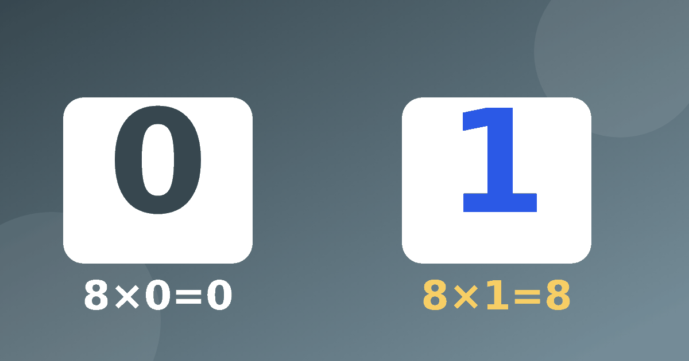

Нуль и единица в умножении: простые объяснения для родителей

Казалось бы, правила самые лёгкие во всей таблице, но именно с ними дети ошибаются чаще, чем ждут взрослые. Умножение на 0 и умножение на 1 легко перепутать со сложением, и тогда в ответе появляются странные числа. Разберёмся, откуда берётся путаница и как её спокойно исправить.
Два правила в двух предложениях
Если число умножить на единицу, оно не изменится. Если число умножить на нуль, получится нуль. Вот и всё. Например, 7 × 1 = 7, 25 × 1 = 25, 9 × 0 = 0, а 0 × 100 = 0. Порядок множителей здесь тоже не важен, и 1 × 8 = 8 так же верно, как 8 × 1 = 8.
Сложность в том, что ребёнок слышит слова «ноль» и «один» и вспоминает сложение. При сложении 5 + 0 = 5, а при умножении 5 × 0 = 0. И наоборот, 5 + 1 = 6, а 5 × 1 = 5. Вот это и нужно проговорить вслух.
Почему умножение на ноль даёт ноль
Помните, что умножение — это «взять несколько раз по столько-то». Тогда 4 × 0 значит «взять четыре раза по нулю». Четыре пустые тарелки в сумме дают пустоту. А выражение 0 × 4 значит «взять ноль раз по четыре», то есть не взять ни разу. Снова ничего.
Предложите ребёнку разыграть это на кухне. Поставьте три тарелки и скажите, что на каждой лежит по нулю печений. Сколько всего печенья? Дети обычно с удовольствием отвечают и запоминают образ пустых тарелок лучше, чем сухое правило.
Почему умножение на 1 ничего не меняет
Здесь тоже поможет картинка. Умножение на 1 значит «взять один раз по столько-то». Одна корзина, в ней 6 яблок, всего 6 яблок. А если в каждой из шести корзин лежит по одному яблоку, получится 6 × 1 = 6, тоже шесть яблок.
Можно поиграть в зеркало. Вы называете любое число, а ребёнок отвечает, что получится, если умножить его на единицу. Скоро он поймёт, что число просто повторяется.
Примеры для устной тренировки
Предложите ребёнку решить несколько примеров подряд и объяснить каждый ответ. Например, 12 × 1 = 12, 12 × 0 = 0, 1 × 1 = 1, 0 × 0 = 0 и 1 × 0 = 0. Последние три особенно полезны, потому что в них оба множителя необычные и приходится думать, а не повторять.
Добавьте и большие числа, например 1000 × 0 = 0 и 357 × 1 = 357. Они показывают, что правило не зависит от размера числа и считать столбиком не нужно.
Позже ребёнок встретит числа вроде 305 × 2 и 400 × 3. Нули внутри числа не должны его пугать. Подробнее о том, что пригодится перед такими примерами, рассказано в статье про подготовку к умножению в столбик.
Типичные ошибки и вопросы про деление
Вот что чаще всего встречается на практике.
- Ребёнок пишет 8 × 0 = 8, потому что вспоминает, что прибавление нуля ничего не меняет.
- Ребёнок пишет 6 × 1 = 7, потому что путает умножение с прибавлением единицы.
- Ребёнок думает, что при умножении ответ обязательно должен получиться больше, ведь «умножить — значит увеличить».
- Ребёнок считает, что 0 × 5 и 5 × 0 — разные примеры.
В последнем случае помогает объяснение, что множители можно менять местами. Об этом подробно сказано в статье про переместительное свойство. Достаточно один раз показать, что и пустые тарелки, и ноль повторов дают одинаковый результат.
Если ошибки повторяются, не ругайте. Загляните в материал об ошибках родителей при изучении таблицы и проверьте, нет ли лишнего давления.
Хорошо, если ребёнок учится объяснять свой ответ словами. Фраза «ноль раз по шесть — это ничего» говорит о понимании больше, чем быстрый правильный ответ. А если он ответил неверно, попросите нарисовать ситуацию, и ошибка часто находится сама.
Позже ребёнок встретит правило, что делить на ноль нельзя. Объяснять его заранее не нужно, достаточно знать, что оно существует. Если вопрос всё же возникнет, помогает связь между действиями, которую мы описали в статье про деление как обратное умножение.
Как закрепить
Потренируйтесь минут пять, смешивая такие примеры с обычными, чтобы ребёнок не угадывал правило по привычке. В тренажёре можно собрать короткую серию, а таймеров на вопросах и рекламы там нет. Для общего плана занятий пригодится статья как выучить таблицу умножения.
Заканчивайте занятие примерами, которые ребёнок решает уверенно. Тогда нуль и единица перестанут пугать, а станут самыми простыми строками таблицы.